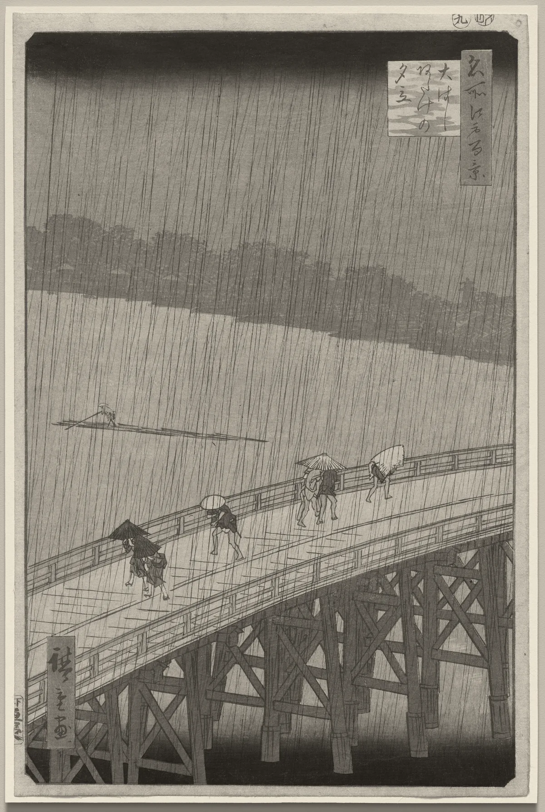

· Edición 76 · 4 min de lectura
Los celulares ya avisan de terremotos; Colombia aún no tiene sistema oficial

Los celulares ya avisan de terremotos; Colombia aún no tiene sistema oficial
Ver todo el tema, de principio a fin →
En pocas palabras. Se puede saber que viene un terremoto? Predecirlo, no; avisar unos segundos antes de la sacudida, sí: los celulares Android ya lo hacen en más de 200 países y regiones, Colombia incluida. Le importa porque 83 de cada 100 colombianos viven en zonas de amenaza sísmica intermedia o alta. Revise que la alerta esté encendida en su celular: el sistema oficial, que llegaría a todos, sigue esperando en el Senado.
El dato curioso. En noviembre de 1868, semanas después de un fuerte terremoto en la bahía de San Francisco, el médico J. D. Cooper propuso en un periódico de la ciudad detectores a decenas de kilómetros, unidos por cables de telégrafo a una campana enorme en el centro: «la campana del terremoto». La señal eléctrica llegaría antes que el temblor. Nadie la construyó, y la idea quedó olvidada por décadas, según el laboratorio sismológico de Berkeley.
¿Qué mejoró? El 10 de agosto, a las 7:34 de la mañana, la tierra se movió bajo San José del Palmar (Chocó): magnitud 7,4, según el Servicio Geológico Colombiano. La Unidad de Gestión del Riesgo contó más de 320 muertos. Ese día, mucha gente preguntó por qué su celular no había sonado.
La alerta funciona como el relámpago y el trueno. Un sismo suelta primero una onda rápida que casi no hace daño; la que tumba casas viene detrás, más lenta. Si los sensores captan la primera y avisan por internet, el aviso llega antes. Cuanto más lejos el origen, más segundos de ventaja.
1868
La campana del terremoto
J. D. Cooper la propone en San Francisco. No se construye.
1991
México enciende su alerta
Tras el terremoto de 1985, la capital empieza a recibir avisos de los sismos de la costa de Guerrero.
2007
Japón, a todo el país
Los avisos llegan por televisión y radio.
2025
Un sismómetro en cada bolsillo
Un estudio en Science cuenta que los celulares Android multiplicaron por diez, en tres años, la gente con acceso a una alerta: 2.500 millones en 98 países.
Octubre de 2026
Más de 200 países y regiones
Google amplía el sistema y dice haber enviado más de mil millones de alertas desde 2021.
PendientePendiente
Un sistema oficial en Colombia
El proyecto de ley 170 de 2026 espera su primer debate en el Senado.
Fuente: Laboratorio Sismológico de Berkeley; Expansión; Agencia Meteorológica de Japón; Science; Google; Gaceta del Congreso
¿Y a mí qué? En los Android compatibles la alerta viene encendida, según Google, y suena para sismos de magnitud 4,5 o más. Los iPhone no traen ese sistema y en Colombia no hay una alerta oficial que les llegue. (Conocimiento general.)
Lo que cambia en 10 a 50 años: los grandes sismos volverán, y cada vez más gente vivirá en ciudades. La diferencia la harán unos segundos de aviso para ponerse a salvo.
¿Por qué mejoró?
- Un sismómetro en cada bolsillo. El sensor que gira la pantalla también siente el movimiento; si muchos celulares de una zona lo sienten a la vez, Google calcula dónde fue el sismo y su tamaño.
- Países que lo volvieron servicio público. México da desde 1991 cerca de un minuto de aviso a su capital ante los sismos de la costa de Guerrero; Japón avisa a todo el país desde 2007.
¿Qué lo amenaza?
- Las falsas alarmas. El 16 de octubre, Japón alertó de un terremoto de magnitud 9,9 que no existía; lo canceló a los ocho minutos, y el 17 de noviembre dijo haber corregido las dos fallas. Cada falsa alarma gasta confianza.
- Quedarse corto. En Turquía, en 2023, el sistema de Google subestimó el terremoto: la alerta más alta llegó a 469 personas; unos 10 millones podían haberla recibido, según la BBC.
- Una sola empresa. En Colombia, hoy, el aviso depende de Google.
Pero ojo.
- Llega tarde a muchos. De cada 100 encuestados que sintieron el sismo, apenas 36 recibieron la alerta antes, según Science.
- Cerca del origen no hay tiempo. Lo que protege allí es una casa bien construida.
Lo que ya habíamos contado. El 23 de septiembre, a propósito de los temblores de Chaparral (Tolima), escribimos que una alerta no sirve cuando el sismo nace justo debajo del pueblo (ver esa edición). Hoy, dónde sí sirve.
Qué hacer con esto
Cómo prepararse. En Android: Ajustes, Seguridad y emergencia, Alertas de terremotos. Si no aparece, búsquela en Ubicación, Avanzada. Si suena: agacharse, cubrirse y sujetarse. (Conocimiento general.)
Ojo con el cuento. Nadie puede decir el día y la hora de un terremoto: el Servicio Geológico advierte que quien lo anuncia, miente. Una alerta avisa de un sismo que ya empezó.
Dos lecturas
Las dos posturas sobre el tema, en su mejor versión
Un sistema público. Una alerta que llegue a todos, también a quien tiene un iPhone o un radio, no puede depender de la voluntad de una empresa. El Servicio Geológico ya tiene sensores; falta conectarlos a un aviso con reglas claras.
Aprovechar lo que existe. Las alertas de los celulares ya cubren a millones sin costarle al Estado. Antes de pagar una red nueva, conviene enseñar a usarlas y acordar con las empresas cómo coordinarlas con el Servicio Geológico.
Quién decide y cuándo
Quién decide. El Congreso. El proyecto de ley 170 de 2026 Senado, de la senadora María Lucía Villalba, pone al Servicio Geológico a detectar los sismos y a la Unidad de Gestión del Riesgo a coordinar el aviso.
Cuándo. Necesita cuatro debates y no encontramos que haya tenido el primero. Si no lo tiene antes del 20 de junio de 2027, se archiva.
Cómo participar. Escribir a los senadores de la comisión o seguir el trámite en Congreso Visible. (Conocimiento general.)
Seguimiento de la decisión
Pendiente · plazo:
Congreso de Colombia: primero la comisión del Senado a la que se asignó el proyecto, luego la plenaria del Senado y la Cámara: Dar primer debate al proyecto de ley 170 de 2026 Senado, que crea el Sistema Nacional de Alerta Sísmica Temprana: el Servicio Geológico Colombiano detectaría el sismo y la alerta llegaría a celulares, radio y televisión.
Radicado en agosto de 2026 por la senadora María Lucía Villalba y publicado en la Gaceta del Congreso 1077 del 20 de agosto. Al 21 de noviembre no encontramos ponencia ni votación. Si no tiene primer debate antes del 20 de junio de 2027, cuando termina la legislatura, se archiva (Ley 5 de 1992, artículo 190).
La paradoja del día
Lo más absurdo de la edición, en dos líneas
En 1868, un médico imaginó una campana para toda una ciudad. En 2026, millones de colombianos llevan esa campana en el bolsillo, puesta por una empresa; la del Estado sigue esperando su primer debate.
Para conversar
La pregunta. Si el celular le diera diez segundos antes de un terremoto, ¿sabría usted qué hacer con ellos? ¿Y en su casa?
Para leer más
Libros para seguir con el tema
Desastres: cómo las grandes catástrofes moldean nuestra historia, de Lucy Jones (Capitán Swing, 2021; traducción de María Porras Sánchez). Una sismóloga estadounidense repasa grandes desastres de la historia y lo que cada sociedad aprendió, o no, para el siguiente.
¿Le interesa ver las fuentes?
Todos los documentos y datos que usamos
31 fuentes: 4 académicas, 10 oficiales, 2 de organizaciones, 14 de prensa, 1 de referencia.
- Organización Google, blog para Latinoamérica (15 de octubre de 2026). Las alertas de terremotos Android ya están disponibles en más de 200 regiones
- Académica Allen, Barski y otros, Science (17 de julio de 2025). Global earthquake detection and warning using Android phones
- Organización Science Media Centre España (17 de julio de 2025). Un sistema de alerta de terremotos con teléfonos Android llega a 2.500 millones de personas en 98 países
- Prensa Euronews (28 de julio de 2025). Google admits earthquake alert system failed to warn most users before 2023 Turkey quake
- Oficial Agencia Meteorológica de Japón (comunicado, 17 de noviembre de 2026). Corrección de las fallas que causaron el aviso sísmico sobreestimado del 16 de octubre (cuarto informe)
- Prensa Nippon.com, con Jiji Press (16 de octubre de 2026). Japan Meteorological Agency Retracts Warning of Huge Quake
- Oficial Agencia Meteorológica de Japón. Earthquake Early Warnings
- Oficial Poder Judicial de la Ciudad de México, Protección Civil. Funcionamiento del SASMEX
- Prensa Expansión (19 de septiembre de 2025). La alerta sísmica de México, primera en el mundo
- Académica Laboratorio Sismológico de la Universidad de California en Berkeley. Earthquake Early Warning Timeline
- Académica Seismological Research Letters, vol. 84, n.º 5 (2013), sección «Historical Seismologist». Un telegrafista iraní y la idea de la alerta sísmica temprana (con el antecedente de J. D. Cooper, 1868)
- Oficial Servicio Geológico Colombiano. Colombia es un país expuesto a la amenaza sísmica
- Académica Feliciano y otros, Natural Hazards and Earth System Sciences (2023). Seismic risk scenarios for the residential buildings in the Sabana Centro province in Colombia
- Oficial Organización Panamericana de la Salud (10 de agosto de 2026). Informe de situación 1: Colombia, terremoto de agosto de 2026
- Prensa Vanguardia (20 de agosto de 2026). UNGRD actualiza cifras del terremoto en Colombia: 319 fallecidos y 31.461 viviendas destruidas
- Prensa El Colombiano (agosto de 2026). Nuevo balance del terremoto de magnitud 7,4 eleva a 321 la cifra de fallecidos y mantiene en 257 la de desaparecidos
- Prensa Infobae (10 de agosto de 2026). Por qué no apareció la alerta de sismos en mi celular Android en el terremoto en Colombia
- Oficial Senado de la República. De la tragedia a la prevención: proyecto busca que Colombia se anticipe a futuros terremotos
- Oficial Gaceta del Congreso 1077 de 2026 (20 de agosto), vía Congreso Visible. Proyecto de ley 170 de 2026 Senado: Sistema Nacional de Alerta Sísmica Temprana
- Prensa Portafolio. Proyecto de ley busca crear una alerta sísmica universal: se mostraría en celulares, TV y radio
- Prensa Noticias RCN. Alerta sísmica en Colombia llegaría a celulares, radio y TV: así funcionará el sistema que avisará antes de un temblor
- Prensa Bloomberg Línea (18 de agosto de 2023). ¿Cómo activar la alerta sísmica de Google tras temblores en Colombia y Chile?
- Prensa El País (Cali). Alerta por falsas predicciones de terremotos que circulan en redes: esto dice el Servicio Geológico Colombiano
- Oficial Función Pública, Gestor Normativo. Ley 5 de 1992, reglamento del Congreso (artículo 190, tránsito de legislatura)
- Oficial Función Pública, Gestor Normativo. Constitución Política de Colombia (artículos 138 y 162)
- Oficial Asamblea General de las Naciones Unidas. Resolución 64/200: Estrategia Internacional para la Reducción de Desastres (21 de diciembre de 2009)
- Referencia Librería Polifemo (ficha del libro). Desastres: cómo las grandes catástrofes moldean nuestra historia, de Lucy Jones (Capitán Swing, 2021)
- Prensa Bloomberg Government (12 de noviembre de 2026). First Deep-Sea Mining Certification Expected by Mid-December
- Prensa ScienceDaily, con el MIT (18 de noviembre de 2026). MIT discovers that aging weakens the brain's nighttime cleaning system
- Prensa Publimetro (13 de noviembre de 2026). Colombia hizo historia en Dakar 2026: estos son los ocho deportistas que ganaron medallas en los Juegos Olímpicos de la Juventud
- Prensa pv magazine (13 de noviembre de 2026). Sodium-ion batteries close gap with lithium-ion as utility-scale storage opportunities grow
Glosario
Las palabras técnicas, explicadas
- Alerta sísmica temprana: un aviso que sale cuando un sismo ya empezó, pero antes de que la sacudida fuerte llegue a donde está la persona. No es una predicción.
- Onda P y onda S: las dos primeras ondas de un sismo. La P es la más rápida y casi no hace daño; la S llega después y es la que más sacude. (Conocimiento general.)
- Magnitud: el tamaño de un sismo según la energía que libera. Cada punto más es unas 32 veces más energía. (Conocimiento general.)
- Amenaza sísmica: la probabilidad de que un lugar sufra sacudidas fuertes en un periodo dado.
- Acelerómetro: el sensor del celular que mide el movimiento; es el que gira la pantalla.
- Legislatura: el año de trabajo del Congreso, del 20 de julio al 20 de junio. Un proyecto que no tiene primer debate en ella se archiva.
Nota metodológica
Cómo se hizo esta edición y qué no pudimos verificar
El horizonte. ¿Cambia el rumbo de cómo vive la gente, en Colombia o en el mundo, dentro de 10 a 50 años? Sí. Los grandes sismos se repiten en escalas de décadas, y 83 de cada 100 colombianos viven en zonas de amenaza intermedia o alta, según el Servicio Geológico. Lo que cambia es que, por primera vez, miles de millones de personas pueden tener unos segundos de aviso: el acceso a una alerta se multiplicó por diez en tres años, hasta 2.500 millones de personas, según el estudio de Science, y en octubre de 2026 el sistema llegó a más de 200 países y regiones. Si esos segundos se vuelven un servicio público, con simulacros y reglas, cambian cuántos mueren y se hieren en el próximo gran sismo.
El filtro. Entra por la puerta del avance: hay una serie que muestra la mejora (de un puñado de países con red propia a 98 en 2025 y más de 200 en 2026); se puede decir por qué mejoró (los sensores de los celulares y redes públicas como las de México y Japón); y hay amenazas y una decisión en curso (las falsas alarmas, la subestimación en Turquía y el proyecto de ley 170 de 2026 en el Senado). La puerta de entrada es el comunicado de la Agencia Meteorológica de Japón del 17 de noviembre, que cierra la falsa alarma del 16 de octubre, junto con la ampliación de Google del 15 de octubre y el proyecto colombiano. Es tema de tecnología y ciencia, como pide el sábado. En la semana hubo dos nudos, dos cambios de fondo y un avance; este es el segundo avance. Quisimos salir de la salud (dos de las cinco ediciones) y de la energía y el ambiente (tres).
Puntaje. De 1 a 3 en cada criterio; peso en la vida y horizonte valen doble (máximo 24). Solo entra un tema con horizonte 3.
| Tema | Puerta | ¿Cambia el rumbo en 10 a 50 años? | Alcance | Peso | Horizonte | Cercanía | Margen | Mirada | Total | Resultado |
|---|---|---|---|---|---|---|---|---|---|---|
| Alerta sísmica en los celulares y el sistema oficial que falta | avance | Sí: segundos de aviso para millones en el próximo gran sismo | 3 | 3 | 3 | 3 | 2 | 2 | 22 | Elegido (edición 76) |
| Minería en el fondo del mar (mundo) | fondo | Sí: se abre o no un ecosistema casi desconocido | 2 | 2 | 3 | 1 | 2 | 2 | 17 | El permiso aún no existe |
| Baterías de sodio (mundo) | fondo | Sí: guardar energía sin depender del litio | 3 | 2 | 3 | 2 | 1 | 2 | 18 | Tercer tema de energía en doce días |
| Limpieza del cerebro y edad | avance | A la larga: un estudio de laboratorio | 2 | 2 | 2 | 1 | 1 | 1 | 13 | No pasa el horizonte; demencia contada el martes |
En el tema elegido, el peso vale 3: se trata de vida y salud. El margen vale 2: hay un proyecto de ley, pero sin fecha de debate, y algo concreto que hacer ya (revisar el teléfono). La mirada vale 2: la prensa colombiana explicó cómo activar la alerta después del terremoto de agosto, pero no encontramos quien la uniera con la evidencia de Science, los fallos de Japón y Turquía y el proyecto del Senado. Ningún otro tema llega a 19, así que hoy hay una sola edición.
Hicimos unas 40 búsquedas en español, inglés y japonés. No pudimos abrir los documentos completos: ni el estudio de Science, ni el comunicado japonés, ni el texto del proyecto de ley. Trabajamos con resúmenes, fragmentos y resultados de búsqueda, y no les atribuimos más de lo que dicen. De 30 fuentes, 17 no son de prensa.
Quedó sin verificar o con límites:
- Las cifras de Science. Los 2.500 millones de personas, los 98 países y el «diez veces en tres años» son del resumen del estudio. El 36, el 28 y el 23 de cada 100 los conocemos por el resumen del Science Media Centre España: vienen de respuestas de usuarios a una encuesta, no de una medición; los demás no dijeron cuándo les llegó.
- Las cifras de Google. Los más de 200 países y regiones y los más de mil millones de alertas los dice la propia empresa.
- Turquía. Las 469 alertas y los 10 millones son del reportaje de la BBC, que conocemos por Euronews y otros medios. Los 10 millones son personas que podían haber recibido la alerta, no un conteo de quienes no la recibieron.
- Japón. La hora, la magnitud de 9,9 y los ocho minutos vienen de Jiji Press; las dos fallas y su corrección, del comunicado de la agencia del 17 de noviembre, que leímos en un resumen.
- El terremoto del 10 de agosto. La magnitud, la hora y el epicentro son del Servicio Geológico, citado por la OPS. La Unidad de Gestión del Riesgo contaba 319 muertos el 20 de agosto, según Vanguardia, y 321 al día siguiente, según El Colombiano; escribimos «más de 320» porque los balances siguieron cambiando. Que muchos preguntaron por qué su celular no sonó lo tomamos de Infobae; no sabemos cuántos recibieron la alerta.
- El 83 de cada 100. El Servicio Geológico lo repite y lo cita un estudio de 2023 en Natural Hazards and Earth System Sciences; un estudio anterior del mismo Servicio daba 86.
- El proyecto de ley. Que no ha tenido primer debate es lo que encontramos: ni ponencia ni votación en las agendas del Senado. No confirmamos a qué comisión fue asignado. La regla del archivo sale de la Ley 5 de 1992 y de la Constitución, que citamos sin abrir el texto.
- México. El «cerca de un minuto» es un promedio para los sismos de la costa de Guerrero; según el caso, el aviso va de unos 20 a más de 100 segundos.
- El dato curioso. La propuesta de Cooper apareció en un diario de San Francisco el 3 de noviembre de 1868, según el laboratorio de Berkeley y Seismological Research Letters; las fuentes no coinciden en el nombre exacto del periódico.
- Lo de los iPhone, la forma de la onda P y la S, el «agacharse, cubrirse y sujetarse» y la participación van marcados como conocimiento general.
La imagen es un grabado en madera de Utagawa Hiroshige, de 1857, de la colección abierta del Cleveland Museum of Art (dominio público). No muestra un sismo: es un aguacero que sorprende a la gente en un puente de Edo, y la elegimos por lo que evoca, lo que llega sin aviso, y por Japón. Commons rechazó tres veces nuestras consultas por exceso de pedidos, y la colección del Met no nos dejó descargar sus grabados de sismos de José Guadalupe Posada.
El libro: no pudimos consultar el catálogo de Santo & Seña, así que va sin enlace. La editorial, el año y la traductora los confirmamos en fichas de librerías.